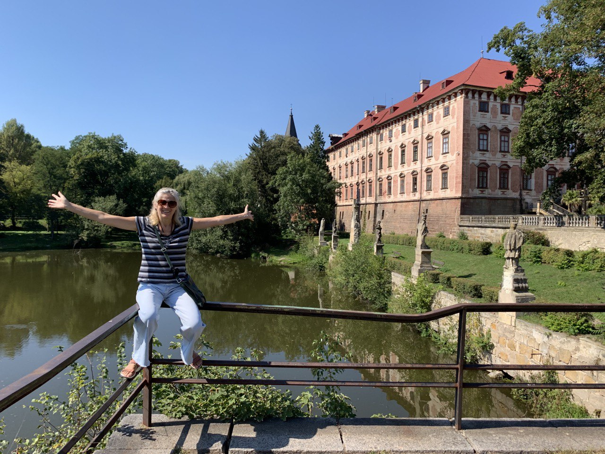
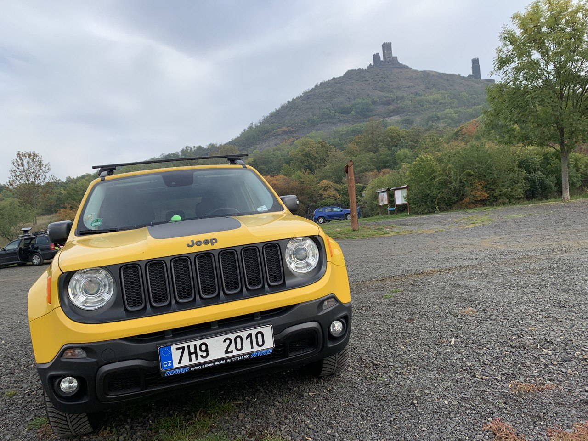
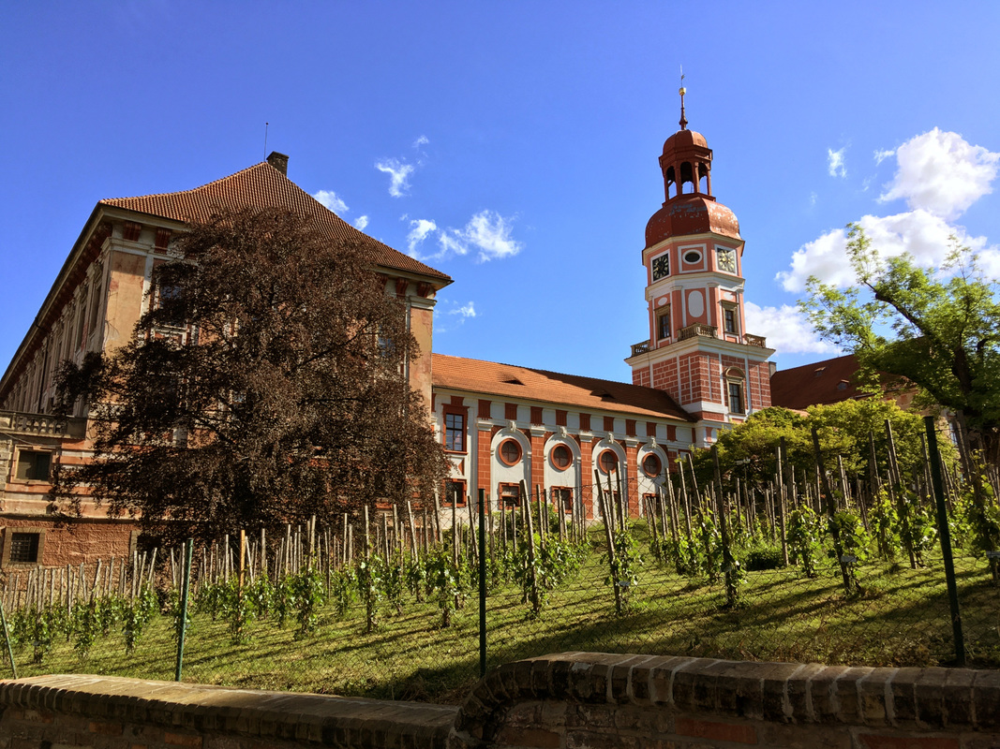
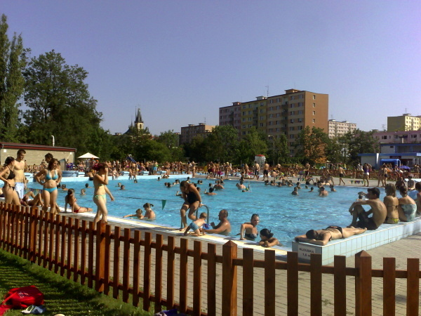
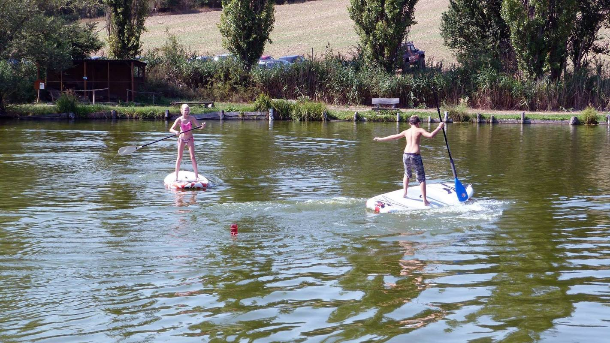

Hrady, zamky a zříceniny
Zámek Libochovice
Předchůdcem zámku bývala gotická tvrz, kterou ve čtrnáctém století vlastnili Zajícové z Hazmburka. Od nich ji získali Lobkovicové, kteří na místě zchátralé tvrze postavili renesanční zámek.
Zřícenina hradu Házmburk
Hrad byl od roku 1336 do roku 1558 sídlem rodu Zajíců z Hazmburka. Později, podobně jako ostatní hrady, ztratil svůj význam a byl opuštěn. Postupně zpustl a až v době romantismu se stal předmětem zájmu českých romantiků.
Budyně nad Ohří
Nejstarší známé stopy osídlení v budyňském katastrálním území pochází z období neolitu a nachází se v místech s pomístním názvem Mileticko jihozápadně od města.
Zámek Vrbičany
V 17. století stál ve vesnici poplužní dvůr a některé zdroje uvádějí, že jeho součástí byla také jinak nedoložená tvrz. Pozdně barokní zámek Vrbičany byl postaven v letech 1786–1789 Františkem Karlem Kresselem, svobodným pánem z Kvaltenberku.
Zámek Pátek
Předchůdcem páteckého zámku byla tvrz vybudovaná v blíže neznámé době strahovským klášterem. První písemná zmínka o ní je z roku 1374 a nachází se v klášterním urbáři. Stojí na návrší nad pravým břehem řeky Ohře. Je chráněn jako kulturní památka České republiky.
Zřícenina bývalého mlýna Windsor
Mlýn holandského typu byl postaven již před rokem 1843. Jedná se o trojpodlažní stavbu postavenou ze světlé opuky a cihel. Ve mlýně se mlelo až do roku 1870, kdy jej poslední mlynář Kunze prodal průmyslníkovi Tschinkelovi, který jej nechal přestavět na výletní letohrádek novogotického stylu.
Zřícenina hradu Košťálov
Ačkoliv první písemná zmínka o hradu pochází až z roku 1372, jeho stavební podoba umožňuje uvažovat o vzniku stavby v 1. polovině 14. století. Ještě roku 1486 měl hrad charakter panského rezidenčního sídla. Od roku 1964 je chráněn jako kulturní památka.
Zámek Skalka
Původní tvrz se v pramenech poprvé připomíná roku 1360. Na přelomu 16. a 17. století nahradila původní tvrz kamenná budova se dvěma patry sklepů vytesanými ve skále. V roce 1973 byla do zámecké zahrady převezena část barokního schodiště od kostela Nanebevzetí Panny Marie z Neratova v Orlických horách.
Zřícenina hradu Oltářík

Zakladatelem hradu byl v první polovině patnáctého století husitský hejtman Jakoubek z Vřesovic. Roku 1450 hrad získali do zástavy páni z Polenska, po kterých ho drželi Zajícové z Hazmburka a páni z Illburka. Hrad plnil funkci vojenského opěrného bodu a kromě krátkého období za pánů z Polenska nikdy nebyl panským sídlem. Zanikl neznámým způsobem mezi lety 1468 a 1544.
Zřícenina hradu Oparno
Hrad byl založen v první polovině čtrnáctého století (před rokem 1344) Smilem z Vchynic a jeho potomkům patřil až do začátku šestnáctého století. Oparno patřilo ke hradům s plášťovou zdí. Na jihozápadě se nacházelo předhradí oddělené od zbytku ostrožny a hradního jádra příkopy vysekanými ve skále. Jádro má tvar obdélníku se zaoblenými nárožími a přibližnými rozměry 40 × 20 metrů.
Zámek Roudnice nad Labem
Hrad na skalnatém ostrohu nad řekou Labe založil nejspíše v osmdesátých letech dvanáctého století. Na počátku husitských válek se roudnický hrad stal hlavním sídlem arcibiskupa Konráda z Vechty, který zde roku 1421 přijal a veřejně vyhlásil čtyři artikuly pražské. Hlavní část přestavby na rozsáhlý barokní zámek proběhla v letech 1652–1684.
Zřícenina hradu Kamýk
První písemná zmínka o tvrzi pochází z roku 1319, kdy král Jan Lucemburský udělil Jindřichovi z Kamýku tvrz v dědičné léno. Roku 1547 byl hrad opraven a rozšířen. Avšak již v roce 1600 byl opuštěn a v roce 1632 po jeho vydrancování saskými vojsky definitivně zpustl. Na počátku 19. století navíc ještě podvakrát vyhořel.
Chrám sv. Mikuláše
je římskokatolický farní kostel v Lounech. Jedná se o jedno z vrcholných děl české pozdní gotiky. Je chráněn jako kulturní památka. Byl postaven po požáru 25. března 1517 na místě původního kostela Povýšení svatého Kříže z poloviny 13. století hutí královského architekta Benedikta Rejta.
Zřícenina hradu Kostomlaty
Jsou zřícenina šlechtického hradu z první poloviny 14. století na kopci Kostomlaty. První písemná zmínka o hradu pochází z roku 1333. V roce 1606 už na hradě, který postupně chátral, nikdo nebydlel. V průběhu 16. století Kostomlaty staly pro své majitele neobyvatelné.V roce 1998 bylo založeno Občanské sdružení pro záchranu hradu Kostomlaty, které o památku pečuje.
Zámek Ploskovice
Zakladatelkou vrcholně barokního zámku byla Anna Marie Františka Toskánská. Nedochovaly se žádné dokumenty z počátku stavby, ale kolem roku 1725 už probíhaly dokončovací práce. Roku 1805 zámek získal arcikníže Ferdinand III. Toskánský a o dva roky později bylo k Ploskovicím připojeno zahořanské panství. V té době starý barokní zámek zchátral natolik, že musel být v roce 1816 zbořen. V bouřlivém roce 1848 se měly zámky v Ploskovicích a Zákupech stát letními rezidencemi odstoupivšího Ferdinanda I. Zámek prošel velkou přestavbou, jejímž autorem je architekt Jan Bělský. Stavitel při ní hlavní budovu zvýšil o patro a na konci východních arkád přistavěl pavilon, který se stal protikladem klasicistní budovy z roku 1816 na opačném konci zámku. Uvnitř došlo k úpravám obytných prostor, byla zrušena stará kaple a její místo zaujalo schodiště. Nová kaple byla zřízena v přízemí západní části budovy.
Odpočinek a relaxace
Koupaliště na Ohří

U levého břehu řeky stojí barokní zámek Libochovice. K Ohři se vztahuje řada bájí a pověstí. Jedna z nich vypráví o strážkyni pramene, krásné víle Sibyle, která patřila ke dvanácti družkám víly Egérie, královny celé řeky.
Koupaliště Lovosice
Letní koupaliště v Lovosicích jsme po jeho částečné rekonstrukci od povodní otevřeli v červnu 2017. K dispozici je zde plavecký bazén 50x18 m, dětský bazén 20x 8 m se skluzavkou a dětský bazén 25x7 m. Nechybí ani budova občanské vybavenosti, kde je umístěno občerstvení, zázemí plavčíků, personálu, šatny a WC. V rámci areálu je možné si pronajmou beach volejbalový kurt či si zahrát stolní tenis.
Žernosecké jezero
Žernosecké jezero nebo také Píšťanské jezero je antropogenní jezero o rozloze přes 100 ha. Velká vodní plocha dnes slouží především k rekreaci. Na jeho severovýchodní straně se nachází továrna na výrobu betonových prvků komunikací (betonových prefabrikátů) a odvodňovacích systémů dálnic a letišť.
Koupaliště Písečný ostrov
Areál pro odpočinek a zábavu všech věkových kateogorií. Na dvou a půl hektarech travnaté plochy je k dispozici několik bazénů, tobogán s délkou 114 m, vyhrazená sportoviště, restaurace, občerstvení a dostatek stinných míst pro aktivní i pasivní odpočinek. Brouzdaliště a dětský bazén tvoří samostatnou část oddělenou od hlučnějších míst areálu. U bazénu je k dispozici dětský koutek.
Městské koupaliště Louny
Horké letní dny přímo vybízejí k ochlazení v našem koupališti. Sluncem zalité travnaté plochy poskytnou prostor pro odpočinek a nachytání vytouženého bronzového opálení. Výřivka a tobokány pak potěší každého, který si chce užít ty správné vodní radovány. Nejmenší návštěvníky pak nadchne velké brouzdaliště. Pro letní sportovní vyžití je přichystáno hřiště na míčové hry a další atrakce. Letní dobrodružství může začít!
Malovarský rybník
Historie rybníku, zvaného též "Malvaňák"sahá až do roku 1527. V 18. století přežil rušení velvarských rybníků, do roku 1950 zde byla plovárna. V současnosti (2020) byla dokončena výstavba tzv. "Účka" s pódiem i bufetem pro konání různých zájmových a společenských akcí, k dispozici jsou lavičky, přírodní prolézačky, hřiště s brankami, ohniště i požární cvičiště. Koupání v nádrž je jen na vlastní nebezpečí.
Aquapark Slaný
Pro návštěvníky připravena spousta zábavy ve vodě i na souši. Plavci ocení 25metrový plavecký bazén s pěti drahami, dětem je k dispozici malý mělký bazén se spoustou atrakcí. Atrakce čekají i na dospělé: 87metrový tobogan, divoké vodní koryto nebo protiproud. Relaxovat můžete ve vířivce, na vzduchových masážních lůžcích, v parní sauně nebo při masáži. Spoustu legrace si užijete při minigolfu.
Koupaliště Štětí
Na koupališti ve Štětí se těšte na relaxační bazén s atrakcemi, jako jsou 50metrový vodopád, masážní lehátka, vodní clona, masážní chrliče a trysky, skokanský můstek nebo skluzavka. Pro děti je připraven mělký bazén se skluzavkou a vodním hřibem.
Termální koupaliště Brná
V areálu naleznete rekreační bazén s tobogánem, dětské brouzdaliště, plavecký bazén či další bazén pro rekreaci. Na málokteré koupaliště se dostanete lodí a máte šanci se vykoupat v řece, která tudy protéká. Zdarma je k dispozici chill zóna s plážovou knihovnou, dále stolní fotbálek a ping-pong. Na nejmenší návštěvníky čekají prolézačky s houpačkami. V sousedství je hřiště na plážový volejbal.
Koupaliště Kralupy nad Vltavou
Areal nabízí 50 metrů dlouhý plavecký bazén, rozdělený na zóny pro kondiční a rekreační plavce. Pro malé děti a batolata je připraveno dětské brouzdaliště z nerezu s malou sluzavkou a nosorožcem stříkajícím vodu.Pro děti je připraveno hřiště s herními prvky, pro dospělé pak hřiště na beach volleyball. V areálu se dále nachází půjčovna sportovního vybavení, lehátek, a v hlavní budově samozřejmě občerstvení s širokým sortimentem nápojů a teplých i studených pokrmů.
Vodní park Čabárna
Park byl otevřen v roce 2000 a nabízí celou řadu aktivit pro celou rodinu. Na ploše 3,5 hektaru je k vidění hned několik okrasných jezírek s lekníny a koi kapry. K procházce zve naučná stezka, na níž je možné pozorovat například místní černé labutě. Nejen dětem se pak bude líbit v minizoo s domácími zvířaty, od roku 2005 je navíc v nabídce i sportovní rybolov. V příjemném prostředí Čabárny je možné se také občerstvit v restauraci s posezením, pořádají se tady kulturní akce a v létě je možné kempovat.
Cyklotrasy, Sport a aktivity
Vojenský dvorek v Terezíně
Rewrite - Dvorek vznikl po opravě části bastionu, zvaného Kavalír 2, jedné z nejdůležitějších částí pevnosti, kde se v minulosti nacházely pekárny, a je volně přístupný v předem stanovených hodinách..
Vyhlídkový let balónem Roudnice nad Labem
Lety balónem patří mezi velmi oblíbené letecké zážitky. Čeká vás 50 – 90 minut tichého letu a nádherných výhledů na krajinu pod vámi. Garantujeme maximálně 8 dalších pasažérů v koši. Zážitek let balónem si moc užijete. Soukromý romantický let balónem jenom pro vás dva! Užijte si romantiku v koši balónu. Zvolte si místo odletu! Privátní let balónem je ideálním dárkem pro vaši drahou polovičku.
Vyhlídkový let letadlem Roudnice nad Labem
Vyražte s rodinou na netradiční a originální výlet letadlem. Z Roudnice nyní můžete uskutečnit vyhlídkový let pro 3 osoby, kdy po vzlétnutí dostanete řízení letadla do vlastních rukou. Na výběr budete mít z několika tras, po kterých můžete pilotovat letadlo Cessna. Dokažte sami sobě i své rodině, že za ně vezmete zodpovědnost i ve vzduchu. Máte dost odvahy?